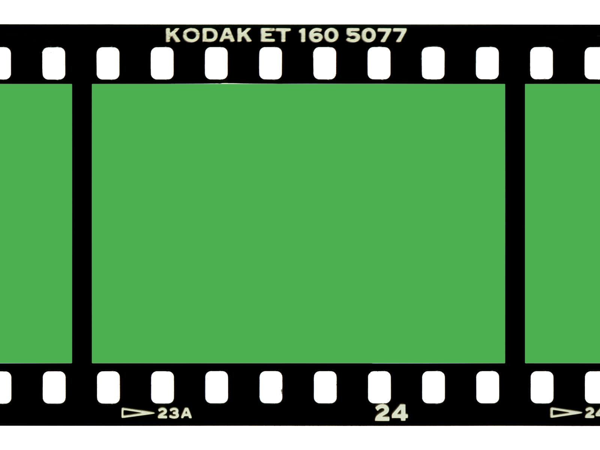

Долженко Дмитрий
Долженко Дмитрий
Вкладка Animation
Вся информация по инструментам разработчика касается только Google Chrome, данный доклад не спонсируется Google Inc. и не несет целью обидеть другие браузеры. Просьба не воспринимать услышанное близко к сердцу и не устраивать холиваров.
Rendering Tools
Layers Tools
Performance Tools
Performance Tools (Paint)
Pure CSS (1 эл.)
Pure CSS (10 эл.)
Pure CSS (100 эл.)
Pure CSS (1000 эл.)
| 1 эл. | 10 эл. | 100 эл. | 1000 эл. |
|---|---|---|---|
| ~ 60 fps | ~ 60 fps | ~ 60 fps | ~ 20 fps |
CSS + JS (1 эл.)
CSS + JS (10 эл.)
CSS + JS (100 эл.)
CSS + JS (1000 эл.)
| 1 эл. | 10 эл. | 100 эл. | 1000 эл. |
|---|---|---|---|
| ~ 60 fps | ~ 60 fps | ~ 35-40 fps | ~ 10 fps |
JS Canvas (1 эл.)
JS Canvas (10 эл.)
JS Canvas (100 эл.)
JS Canvas (1000 эл.)
| 1 эл. | 10 эл. | 100 эл. | 1000 эл. |
|---|---|---|---|
| ~ 55-60 fps | ~ 55-60 fps | ~ 42-44 fps | ~ 26 fps |
| Pure CSS | CSS + JS | JS Canvas | |
|---|---|---|---|
| 1 эл. | ~ 60 fps | ~ 60 fps | ~ 55-60 fps |
| 10 эл. | ~ 60 fps | ~ 60 fps | ~ 55-60 fps |
| 100 эл. | ~ 60 fps | ~ 35-40 fps | ~ 42-44 fps |
| 1000 эл. | ~ 20 fps | ~ 10 fps | ~ 26 fps |